Creating a Graphic for a Moving Wall
Scenario: Do the following to display a moving wall in the graphic and System Browser:
- Create a wall graphic with two states
- Close
- Open
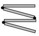
- Create a reaction to update the System Browser.
System Response when Moving a Wall | |
2 rooms | 1 room |
Floor Plan: 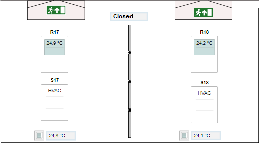 | Floor Plan: 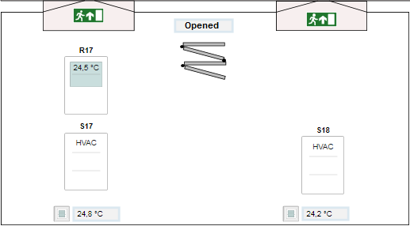 |
Segment in room 17: 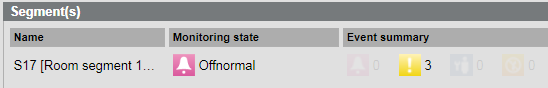 | Segments in one room: 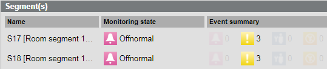 |
Segment in room 18: 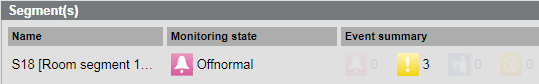 | |
System Browser: 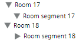 | System Browser: 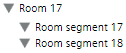 |
Temperature display: The room temperature is individually displayed by room. | Temperature display: The room temperature is displayed as the mean temperature of two rooms in master room 17. |
Prerequisites:
- System Manager is in Engineering mode.
1 – Create a Graphic for a Moving Wall
- The floor plan on a floor or room is created and saved.
- In the graphic, the associated rooms are not labeled as a static element.
- The Graphics Editor is opened.
- Select Home > Element.
- Draw the wall for the state Closed:
- Select a Corner
 or Line
or Line and draw a wall .
and draw a wall . - Click the View tab and then select Evaluation Editor.
- In the System Browser, select Management View.
NOTE: Do not use the Logical View for a moving wall, since the hierarchy structure is adapted dynamically in the System Browser based on the room configuration (hidden or displayed). As a result, the object Room no longer exists in Room 18 and an engineering error message is displayed on the graphic. - In the object structure, select Project > [Network name] \...\ Hardware > [Data point] (for example, a limit switch on the wall).
- Drag the object to the Expression column of the Evaluation Editor.
- Define the properties in the Evaluation Editor:
a. Select Property and Visible.
b. Under Type, select Discrete.
c. In the Type column, select Reference. - In Row 1, Operation column, enter the value 0 or 1.
NOTE: The value entered is based on the control action of the contact. - (Optional) Draw the wall for the state Closed:
- Select a Corner or Line and draw a wall in the open state .
- Click the View tab and then select Evaluation Editor.
- In System Browser, select Management View.
- In the object structure, select the same data point.
- Drag the object to the Expression column of the Evaluation Editor.
- Define the properties in the Evaluation Editor:
a. Select Property and option Visible.
b. Under Type, select Discrete or Simple.
c. In the Type column, select Reference. - In Row 1, Operation column, enter the value 1 or 0.
NOTE: The value entered is based on the control action of the contact. - Click Save.
Settings in the Evaluation Editor | |
Wall closed | Wall open |
Type = Discrete 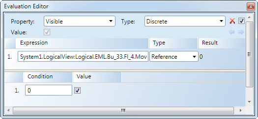 | Type = Discrete 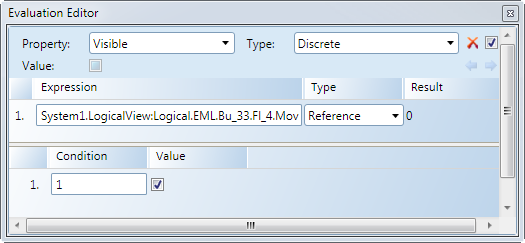 |
| Type = Simple 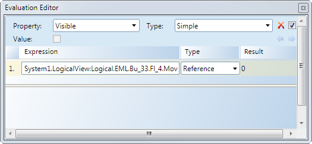 |

NOTE: The property Visible cannot be enabled on both graphics.
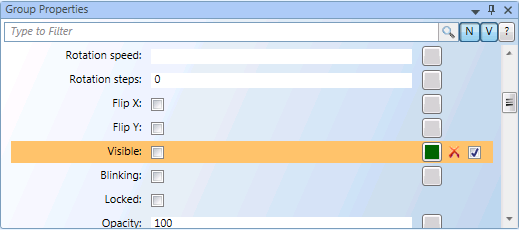
2 – Place a Room and Room Segment
- The floor plan on a floor or room is created and saved.
- The Graphics Editor is opened.
- In System Browser, select Management View.
- Click Filter search .
- The Filter search dialog box opens.
- Open the Object type drop-down list .
- Available filter criteria are displayed.
- Select View element and select check boxes Segment and Room.
- Click Scan.
- All rooms and segments are displayed.
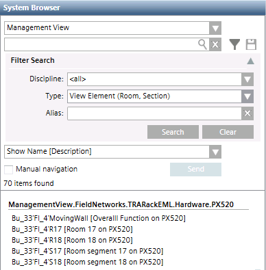
- You can drag a Room or Segment to the floor plan graphic.
3 – Refresh System Browser
The following description applies to two rooms, merged temporarily into one room. The example may need to be modified depending on the selected function.
- The graphics page is created.
- Information, for example, a limit switch on the wall, is available for executing the reaction.
- In System Browser, select Application View.
- Select Applications > Logics > Reactions.
- Open the Reaction Editor tab.
- Open the Triggers expander.
- Open the Values and States expander.
- In the System Browser, select the data point that displays the room state (for example, a limit switch on the wall).
- Drag the data point for the Closed state to the Values and States expander.
- Define the following entries for the closed state (2 rooms):
- In the Property property, select Present Value.
- In the Value range column, select the equals sign (=).
- In the Value range column, select option Closed (0).
NOTE: Pay attention to the contact control action. - Drag the data point for the Open state to the Values and States expander.
- The define the following entries for the open state:
- In the Property property, select Present Value.
- In the Value range column, select the equals sign (=).
- In the Value range column, select option Open (1).
NOTE: Pay attention to the contact control action. - Open the Action > Action expander.
- Select the Room (17) and drag the Room object to the Action expander.
- Define the following entries for room object 17:
- In the Property column, select option Object Usage.
- In the Command column, select option ScanRoom.
- In the Initial delay column, enter a time in seconds [0 = immediate].
- Select the Room (18) and drag the Room object to the Action expander.
- Define the following entries for room object 18:
- In the Property column, select option Object Usage.
- In the Command column, select option ScanRoom.
- In the Initial delay column, enter a time in seconds [0 = immediate].
- Click Save
 .
.
- Create a reaction to update the System Browser.
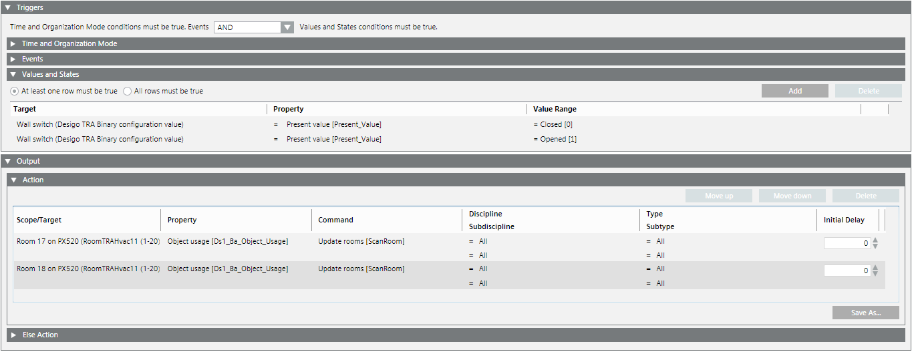